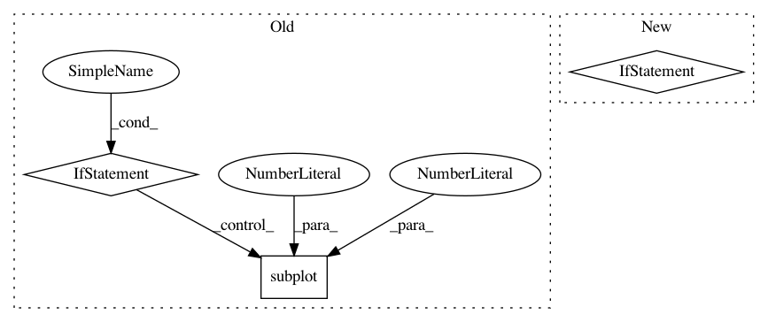

5196910e726c04648f5cffae5f50ecd3171539ce,neurodsp/plts/filt.py,,plot_frequency_response,#Any#Any#Any#,11
Before Change
plt.xlabel("Frequency (Hz)")
// Plot filter kernel, if available
if isinstance(a_vals, int):
plt.subplot(1, 2, 2)
plt.plot(b_vals, "k")
plt.title("Kernel")
After Change
Figure axes upon which to plot.
if not ax:
_, ax = plt.subplots(figsize=(5, 5))
ax.plot(f_db, db, "k")
ax.set_title("Frequency response")
ax.set_xlabel("Frequency (Hz)")
In pattern: SUPERPATTERN
Frequency: 3
Non-data size: 3
Instances
Project Name: neurodsp-tools/neurodsp
Commit Name: 5196910e726c04648f5cffae5f50ecd3171539ce
Time: 2019-03-17
Author: tdonoghue@ucsd.edu
File Name: neurodsp/plts/filt.py
Class Name:
Method Name: plot_frequency_response
Project Name: nilearn/nilearn
Commit Name: 9b9095f877f603d91495c72f91e4fddf61f1724e
Time: 2019-07-22
Author: jerome@dockes.org
File Name: examples/02_decoding/plot_haxby_stimuli.py
Class Name:
Method Name:
Project Name: CellProfiler/CellProfiler
Commit Name: 313eaca23b01fb8dd0a699bf05cdae99a60899b3
Time: 2016-10-11
Author: mcquin@broadinstitute.org
File Name: cellprofiler/modules/convertobjectstoimage.py
Class Name: ConvertObjectsToImage
Method Name: display